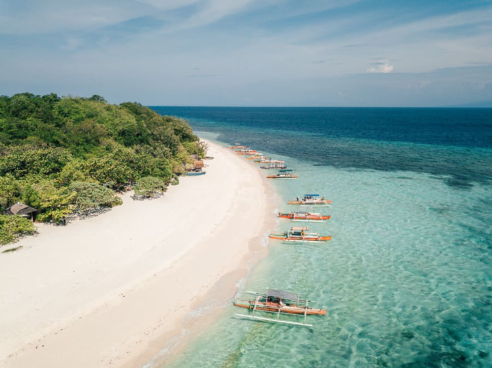
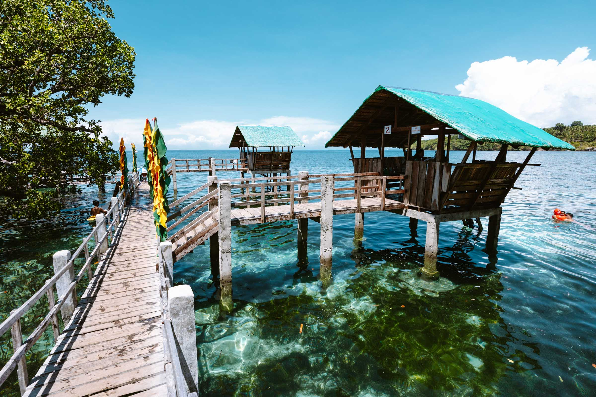
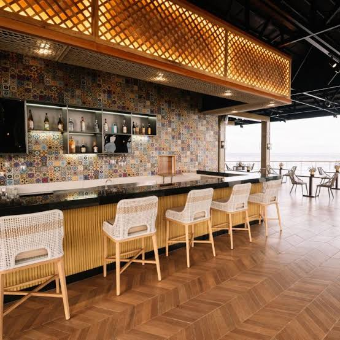
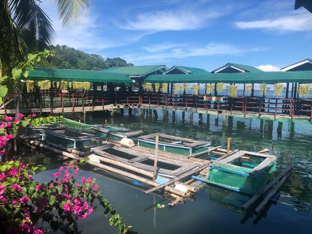
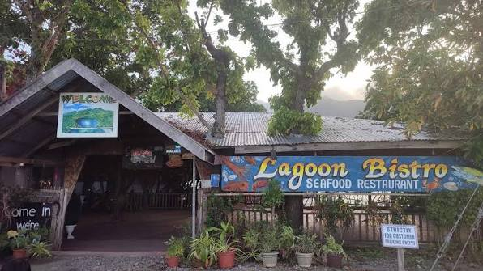

Island
Mantigue Island
A small islet with a white sandbar, clear water, and coral gardens just off Mahinog's coast.
Mabuhay, Mahinognon!
Mahinog is a municipal on the eastern side of Camiguin Island, facing the strait toward Mindanao. Known locally as the gateway near Benoni Port, Mahinog blends fishing traditions, farming, and a growing appreciation for the natural wonders in its waters and forests.
From the sandbar of Mantigue Island to the quiet mangrove boardwalks of Katunggan Park, Mahinog offers a slower, more grounded side of Camiguin one shaped by its people as much as its scenery.
Read our storyA preview of the places that make Mahinog worth the trip.

A small islet with a white sandbar, clear water, and coral gardens just off Mahinog's coast.

A mangrove eco-park with a wooden boardwalk winding through century-old mangrove trees.

A calm brackish lagoon ringed by nipa huts, popular for relaxed afternoons and local gatherings.
A Suggested 3-Day Stay
A curated pace through the municipal's shoreline, mangroves, and tables — balanced for adventure and rest.
A taste of Mahinog's home-grown seafood dining before you plan your full food trip.

An elegant resort restaurant in Tupsan Pequeño offering a mix of international and local cuisine overlooking the sea.

A floating seafood restaurant at Taguines Lagoon where you can catch your own fish and have it cooked on the spot.

A casual restaurant overlooking Taguines Lagoon, known for fresh seafood and its catch-your-own bangus fishpond.
From island hopping to home-cooked seafood, Mahinog is ready to welcome you. Check our tourism guide and local eats before you sail in.
Explore Mahinog